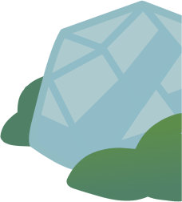
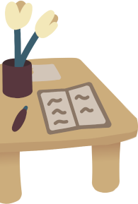
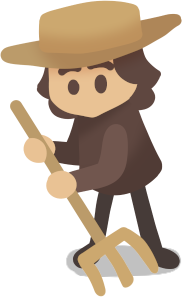
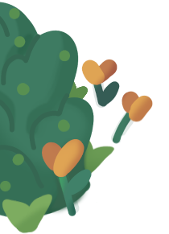

Verken de Moestuinschool!
Er valt van alles te leren over de moestuinschool. Deze fanpage vertelt je alles, neem gerust een kijkje!
De Tuin
De moestuin heeft veel te brengen: een geodetische koepel, installaties om planten mee te groeien, en meer! Wat kan je er precies vinden?
Leer meer!Lessen
De moestuinschool biedt veel lessen over de kweek en het moestuinieren, die je live volgt in de moestuin! Wil je ook lessen volgen? Hier lees je hoe!
Leer meer!De Mensen
Om te leren kweken, heb je natuurlijk wel een goede docent nodig! Deze medewerkers staan altijd voor je klaar bij de moestuinschool. Maar wie zijn ze precies?
Leer meer!De Planten
Er wordt van alles verbouwd in de moestuin: groenten, fruit, bloemen... Noem het maar op! Maar welke planten en gewassen groeien er precies?
Leer meer!